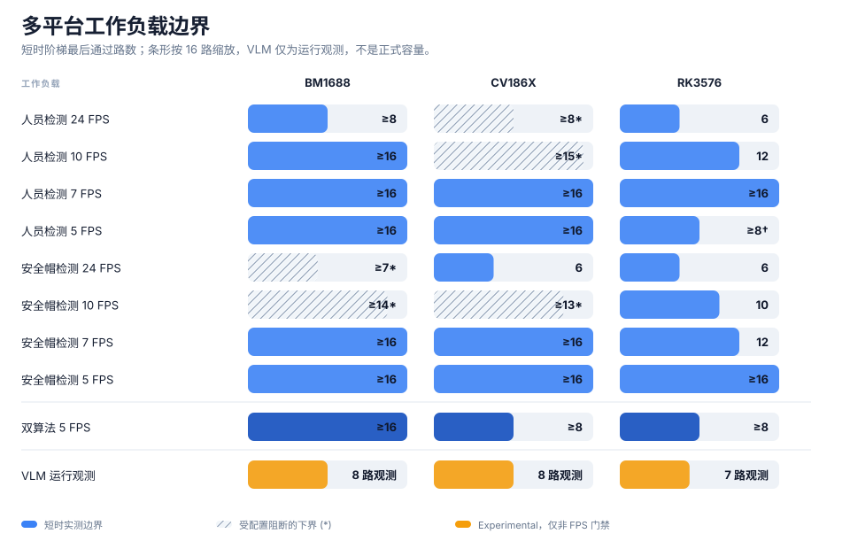
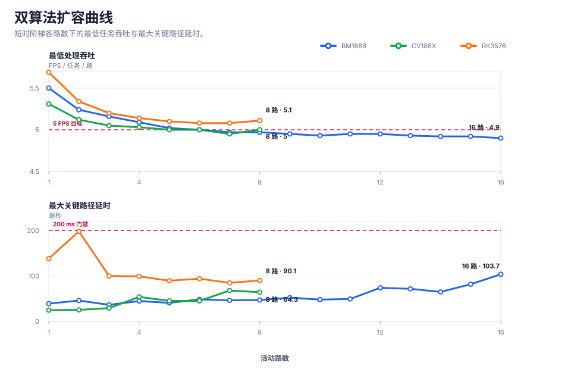
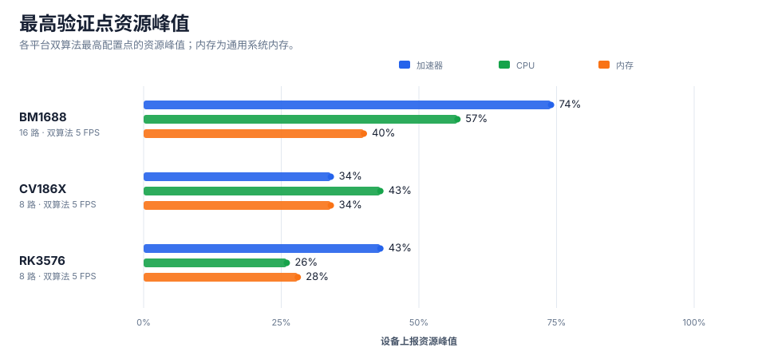

CosmoEdge 1.1 多平台多路视频分析性能报告
BM1688 · CV186X · RK3576
在本报告指定的模型、视频和设备配置下，BM1688 的双算法短时阶梯完成 16 路 × 5 FPS，CV186X 与 RK3576 完成 8 路 × 5 FPS。这些是最高已验证短时点，不是官方推荐路数或芯片理论峰值。
发布版性能材料
发布范围：本页及其脱敏附件可作为 CosmoEdge 1.1 公开性能材料。BM1688/CV186X 实测已绑定到 manifest 所列 Open 包；Protected 与 RK3576 包身份属于产品发版证据，不随本公开 benchmark 分发。
推荐配置与短时实测边界
| 平台 | 设备 | 推荐配置 | 最高已验证点 | 单级时长 | 状态 |
|---|---|---|---|---|---|
| BM1688 | BM1688 reference device | 待重复与长稳确认 | ≥ 16 路 × 双算法 × 5 FPS | 15 s | Preliminary |
| CV186X | CV186X reference device | 待重复与长稳确认 | ≥ 8 路 × 双算法 × 5 FPS | 30 s | Preliminary |
| RK3576 | RK3576 EVB | 待重复与长稳确认 | ≥ 8 路 × 双算法 × 5 FPS | 15 s | Preliminary |



单算法容量矩阵
数字为最后通过路数；“≥”表示最高配置点通过；“*”表示下一步被任务绑定错误阻断，不是性能上限。
| 平台 | 工作负载 | 24 FPS | 10 FPS | 7 FPS | 5 FPS | Status |
|---|---|---|---|---|---|---|
| BM1688 | 人员检测 | 7 | 15 | ≥16 | ≥16 | Preliminary |
| BM1688 | 安全帽检测 | 7 | ≥12* | ≥16 | ≥16 | Preliminary |
| CV186X | 人员检测 | ≥3* | ≥8* | ≥11* | ≥15* | Preliminary |
| CV186X | 安全帽检测 | ≥3* | ≥8* | ≥11* | ≥15* | Preliminary |
| RK3576 | 人员检测 | 6 | 12 | 15 | ≥16 | Preliminary |
| RK3576 | 安全帽检测 | 5 | 10 | 12 | 15 | Preliminary |
实验结果：VLM 运行观测
目标为每路 0.1 FPS，但分析 FPS 未参与 PASS/FAIL。表中“通过”只表示非 FPS 门禁，不得解释为 VLM 正式容量。RK3576 的原始计数器是共享任务口径，本页使用已复核的等效单路观测值；完整修正规则见 methodology.md。
| 平台 | 目标 FPS/路 | 非 FPS 门禁最后通过路数 | 该点等效单路 FPS | 停止点 | Status |
|---|---|---|---|---|---|
| BM1688 | 0.1 | 8 | 0.04 | 最高配置点完成观测 | Experimental |
| CV186X | 0.1 | 8 | 0.08 | 最高配置点完成观测 | Experimental |
| RK3576 | 0.1 | 7 | 0.063 | 第 8 路非 FPS 门禁停止 | Experimental |
关联附件
主报告只保留公开结论；下列脱敏附件提供逐路过程数据和机器可读结果。
| 平台 | 单算法 | 双算法 | VLM | 机器可读数据 |
|---|---|---|---|---|
| BM1688 | 单算法逐路报告 | 双算法逐路报告 | VLM 观测报告 | summary.json · metrics.json |
| CV186X | 单算法逐路报告 | 双算法逐路报告 | VLM 观测报告 | summary.json · metrics.json |
| RK3576 | 单算法逐路报告 | 双算法逐路报告 | VLM 观测报告 | summary.json · metrics.json |
可比性声明
BM1688 与 CV186X 使用字节一致的 Open Sophon 检测/分类模型；RK3576 使用平台专用 RKNN 产物，尚未证明来自同一冻结源模型与精度。本报告描述典型工作负载，不制作芯片性能排行榜。
测试环境
| Platform | Board | OS | Runtime / media | CosmoEdge |
|---|---|---|---|---|
| BM1688 | Sophon BM1688 reference design; commercial enclosure name withheld | Ubuntu 22.04.5 LTS | inference: libsophon/BMRT 0.4.12; media: Sophon FFmpeg 2.0.0 / Sophon GStreamer 2.0.0; decoder: bmvpu-decoder; encoder: bmvpu-h264 | V1.1.0.0 |
| CV186X | Sophon CV186X reference design; commercial enclosure name withheld | Ubuntu 22.04.5 LTS | inference: libsophon/BMRT 0.4.12; media: Sophon FFmpeg 2.0.0 / Sophon GStreamer 2.0.0; decoder: bmvpu-decoder; encoder: bmvpu-h264 | V1.1.0.0 |
| RK3576 | Rockchip RK3576 EVB1 V10 Board | Linux distribution not exposed by the read-only device API | inference: RKNN runtime version not exposed by the read-only device API; driver: RKNN driver version not exposed by the read-only device API; rga: version not exposed; runtime telemetry confirms RGA path; mpp: version not exposed; runtime telemetry confirms Rockchip MPP VPU; decoder: rockchip-mpp-vpu / copy-out I420; encoder: rockchip-mpp / copy-first stride-aligned I420 | V1.1.0.0 |
方法与复现
- 固定视频：H.264、1920×1080、24 FPS；SHA-256 见 release-manifest.json。
- 逐路增加；CV 每约 3 秒采样，VLM 每约 10 秒采样；后半段为稳态窗口。
- 模型身份见 models/，场景见 scenarios/，逐路数据见 results/。
- 按 methodology.md 完成本地解析后执行；公开包不包含设备地址、凭据或内部编号。
限制
- 短时阶梯不是长稳，不形成官方推荐配置。
- 本页是最终公开性能报告，不代替完整产品安装、升级、回滚、精度与长稳资格报告。
- VLM 未启用 FPS 门禁，只能作为 Experimental 运行观测。
- 模型准确率材料不在本容量报告范围内。
- 开源检测和分类文件分别保存在 BM1688、CV186X 平台资源目录；样例视频和其他模型二进制不随本 benchmark 分发。
完整合同：release-manifest.json · methodology.md · SHA256SUMS